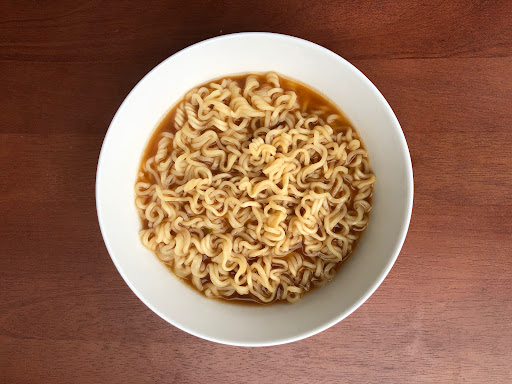

Instant Ramen Recipe

Description
Instant ramen is the first dish I learned how to make, but I still find myself making this delicacy to this day.
In this recipe, we will be adding some eggs to the ramen, but feel free to add any other toppings you like.
Note: This recipe is applicable to all single seasoning packet instant ramen brands (e.g. Maruchan, Nissin, Sapporo Ichiban etc.).
Ingredients
- 1 packet of instant ramen seasoning
- 1 block of instant ramen noodles
- 1 egg
Steps
- Fill a small pot about halfway full with water (this water will serve as our broth later), and bring water to a boil on high heat. (Since we will be adding an egg, a little extra water is fine.)
- Place the noodles into the pot, then crack the egg and mix it into the noodles into the pot while the water is still at boil.
- Set the stove to medium heat and cook the noodles and egg until the noodles are firm and the egg is cooked
- Mix in the seasoning packet, and serve the ramen in a bowl while hot. (You can also add in any other cooked toppings you like at this step)
Return to Odin Recipes